2 Repaso de probabilidad
En este capítulo se utilizarán las siguientes librerías de Python:
2.1 Definición de probabilidad
Usamos el término probabilidad de manera informal para expresar nuestra información y confianza sobre valores desconocidos
TipUsos coloquiales de la probabilidad
- Una moneda es igualmente probable que caiga cara o seca
- La probabilidad que una persona mida menos de 1.6m es 40%
- La probabilidad que la resistencia del suelo sea mayor a 30MPa es 80%
- Es muy probable que mañana llueva
Aunque es usada comúnmente por las personas en todo tipo se situaciones, no existe una definición clara y unívoca de su significado.
Probability is the most important concept in modern science, especially as nobody has the slightest notion what it means.
— Bertrand Russell, 1929
Probability theory is nothing but common sense reduced to calculation.
— Pierre Laplace, 1812
Desde un punto de vista epistemológico, la probabilidad es una medida de la incertidumbre asociada a un evento. Esta definición ha dado origen a distintos enfoques en la manera de interpretar, y cuantificar, la probabilidad: enfoque clásico, frecuentista y subjetivo (o bayesiano)1. El enfoque clásico, desarrollado por Laplace, se basa en la idea de que el espacio de valores posibles se puede dividir en un conjunto equiprobable de resultados, haciendo que la probabilidad de un evento sea el cociente entre la cantidad de resultados asociados al evento de interés y la cantidad de resultados posibles. El enfoque frecuentista, propuesto por autores como von Mises y Fisher, concibe la probabilidad como el límite de la frecuencia relativa de un suceso cuando el número de repeticiones tiende a infinito. Finalmente, el enfoque subjetivo, asociado a Thomas Bayes y desarrollado posteriormente por autores como De Finetti, interpreta la probabilidad como un grado de plausibilidad asignado a un evento incierto por un agente racional.
Enfoque clásico
Para calcular la probabilidad de que un dado justo muestre un número par, se divide la cantidad de resultados favorables (3) entre la cantidad de resultados posibles (6). Por lo tanto, la probabilidad es de 3/6 = 0.5. Este enfoque es particularmente adecuado para juegos de azar diseñados para crear tales circunstancias de igualdad—como calcular que un dado justo tiene una probabilidad de 3/6 de mostrar un número par.
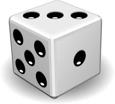
Enfoque frecuentista
Si queremos calcular la probabilidad de que una moneda, potencialmente cargada, caiga cara, no podemos definir un conjunto equiprobable de resultados. En este caso, la probabilidad puede ser interpretada como la frecuencia relativa de un evento en un número infinito de repeticiones. Por ejemplo, si lanzamos la moneda 1000 veces y cae cara 600 veces, la probabilidad de que caiga cara es 600/1000 = 0.6.
Enfoque subjetivo
No todos los experimentos son plausibles de ser repetidos indefinidamente. Tomemos por ejemplo la probabilidad de que mañana llueva. No podemos repetir el experimento de mañana muchas veces para calcular la probabilidad de que llueva. La probabilidad de que llueva mañana es subjetiva y depende de la información disponible y de la interpretación de la misma. Según de Finetti, la probabilidad subjetiva de un evento \(E\) es el precio \(p\) al que una persona estaría dispuesta a intercambiar una suma \(S\) dependiente de la ocurrencia de \(E\) por la suma \(pS\)2. En esencia, tu grado de creencia en \(E\) es \(p\) si y solo si \(p\) unidades de utilidad es el precio al que comprarías o venderías una apuesta que paga 1 unidad si \(E\) ocurre y \(0\) si no ocurre.
2.1.1 Conjuntos
El concepto de probabilidad caracteriza la incertidumbre sobre la ocurrencia de un evento cuyo resultado es incierto, también denominado experimento aleatorio. Se define como espacio muestral al conjunto de todos los resultados posibles de un experimento aleatorio. Un “evento” es definido como un subconjunto cualquiera del espacio muestral.
La siguiente nomenclatura es utilizada a lo largo de este libro:
- \(\emptyset \rightarrow\) Conjunto vacío o evento imposible
- \(S \rightarrow\) Espacio muestral o evento cierto
- \(E \rightarrow\) Evento cualquiera
- \(\bar{E} \rightarrow\) Evento complementario (contiene todos los elementos de \(S\) que no forman parte de \(E\))
Un espacio muestral y sus subconjuntos (o eventos) se puede representar gráficamente por medio de un “Diagrama de Venn” como se muestra en la Figura 1-1.
TipExperimentos aleatorios
Resultado de la tirada de un dado
- Espacio muestral: \(S = \{1, 2, 3, 4, 5, 6\}\)
- Evento “número par”: \(E = \{2, 4, 6\}\)
- Evento complementario: \(\bar{E} = \{1, 3, 5\}\)
Estado de daño de una estructura
- Espacio muestral: \(S = \{Nulo, leve, moderado, grave\}\)
- Evento “estructura utilizable”: \(E = \{Nulo,leve\}\)
- Evento complementario: \(\bar{E} = \{moderado, grave\}\)
Cantidad de autos que pasan por un peaje
- Espacio muestral: \(S = \{0, 1, 2, 3, \ldots\}\)
- Evento “menos de 3 autos”: \(E = \{0, 1, 2\}\)
- Evento complementario: \(\bar{E} = \{3, 4, \ldots\}\)
Resistencia de probeta de hormigón
- Espacio muestral: \(S = [0, \infty)\)
- Evento “entre 25 y 30”: \(E = [25, 30]\)
- Evento complementario: \(\bar{E} = [0, 25) \cup (30, \infty)\)
2.1.2 Axiomas de la probabilidad
Cuantitativamente la noción de probabilidad (cualquiera) responde a los siguientes 3 axiomas postulados por Kolmogorov:
ImportanteAxiomas de la probabilidad de Kolmogorov
- No-negatividad: \(P(E) \geq 0\) donde \(E\) es un subconjunto del espacio muestral \(S\).
- Normalizaciíon: \(P(S) = 1\)
- Aditividad: Si dos eventos son mutuamente excluyentes (\(E_1 E_2 = \emptyset\)), entonces \(P(E_1 \cup E_2) = P(E_1) + P(E_2)\)
2.2 Variables aleatorias
Una variable aleatoria es una función que asigna un número real a cada resultado en el espacio muestral de un experimento aleatorio. En otras palabras, es una función que asigna un número real a cada resultado posible de un experimento aleatorio. Por ejemplo, si lanzamos un dado, la variable aleatoria \(X\) puede ser el número que aparece en la cara superior del dado.
2.2.1 Distribuciones de probabilidad
Una variable aleatoria es caracterizada completamente por su función de distribución de probabilidad. Esta función describe cómo se distribuyen las probabilidades de los distintos valores que puede tomar la variable aleatoria. Existen dos tipos de distribuciones de probabilidad: discretas y continuas.
Variables discretas
Función de probabilidad de masa: \[p_X(x_i) = P(X = x_i)\]
Función de probabilidad acumulada: \[F_X(x_i) = P(X \leq x_i) = \sum_{x \leq x_i} p_X(x)\]
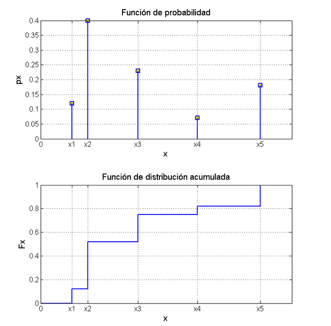
Variables continuas
Función de densidad de probabilidad: \(f_X(x)dx = P(x \leq X \leq x + dx)\)
Función de probabilidad acumulada: \(F_X(x) = P(X \leq x) = \int_{-\infty}^{x} f_X(\xi)d\xi\)
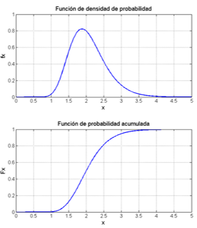
A partir de las definiciones dadas puede deducirse la siguiente relación entre la función de densidad de probabilidad y de distribución para variables aleatorias continuas,
\[f_X(x) = \frac{dF_X(x)}{dx}\]
\[F_X (x) = \int_{-\infty}^{x} f_X(x) dx\]
Por los postulados de la teoría matemática de la probabilidad vistos en el capítulo anterior, las funciones de probabilidad y de distribución deben cumplir las siguientes propiedades:
\(F_X(-\infty) = 0\)
\(F_X(\infty) = 1\)
\(F_X(x) \geq 0\) y monotónicamente creciente
2.2.2 Cálculo de probabilidades y percentiles
Se puede calcular la probabilidad de cualquier evento (subconjunto de la recta real) de interés a partir de las distribuciones de probabilidad.
\(P(a \leq x \leq b) = \int_{a}^{b} f_X(x)dx = F_X(b) - F_X(a)\)
De igual manera, puede calcularse el percentil \(p\) de una variable aleatoria continua como el valor \(x_p\) tal que \(F_X(x_p) = p\). Es decir, el percentil \(p\) es el valor de la variable aleatoria tal que la probabilidad de que la variable aleatoria tome un valor menor o igual a \(x_p\) es \(p\).
Ejercicio 2.1 Sea una variable aleatoria \(X\) continua con función de densidad de probabilidad \(f_X(x) = 2x\) para \(0 \leq x \leq 1\).
- Calcular la probabilidad de que la variable aleatoria tome un valor entre 0.2 y 0.5.
- Calcular el percentil 0.95 de la variable aleatoria.
NotaSolución
- Calculamos la distribución de probabilidad acumulada como,
\[ F_X (x) = \int_{0}^{x} 2u du = u^2 \Big|_{0}^{x} = x^2 \]
La probabilidad requerida se calcula como,
\[ P(0.2 \leq X \leq 0.5) = F_X(0.5) - F_X(0.2) = 0.5^2 - 0.2^2 = 0.25 - 0.04 = 0.21 \]
- Podemos calcular el percentil 0.95 resolviendo la ecuación,
\[ F_X(x_p) = 0.95 \Rightarrow x_p = \sqrt{0.95} = 0.975 \]
2.2.3 Descriptores de una variable aleatoria
Los descriptores son valores numéricos que resumen alguna característica de la distribución de probabilidad de una variable aleatoria. Los más comunes son la esperanza, la varianza y el desvío estándar. Son útiles para describir la distribución de probabilidad de una variable aleatoria de manera resumida.
2.2.3.1 Valores centrales
Los denominados valores centrales son parámetros que identifican un punto del dominio de la variable aleatoria alrededor del cual se concentran zonas de alta probabilidad. Los valores centrales más comunes son la esperanza, la moda y la mediana.
- Valor medio o esperanza \(\mu_X\): Es el valor promedio de la variable aleatoria. Representa el centro de masas de la función de probabilidad de la variable.
- Moda \(\overline{x}\): Es el valor de la variable aleatoria que tiene la mayor probabilidad de ocurrencia. Es el valor que maximiza la función de probabilidad de masa o densidad de probabilidad.
- Mediana \(x_m\): Es el valor de la variable aleatoria que divide el área bajo la curva de densidad de probabilidad en dos partes iguales.
2.2.3.2 Indicadores de dispersión
Los indicadores de dispersión describen qué tan dispersos están los valores de la variable aleatoria alrededor de su valor medio. Los más comunes son la varianza y el desvío estándar.
- Varianza \(Var(X)\): Es una medida de la dispersión de los valores de la variable aleatoria alrededor de su valor medio.
- Desvío estándar \(\sigma_X\): Es la raíz cuadrada de la varianza
- Coeficiente de correlación \(\delta_X\): Es una medida adimensional de la dispersión de los valores de la variable aleatoria en relación a su valor medio.
A continuación se muestra una tabla con las expresiones de los parámetros que más comúnmente se utilizan en la práctica.
Tabla 1. Descriptores de variables aleatorias
| VA Discreta | VA Continua | |
|---|---|---|
| Esperanza | \(\mu_X = \sum_{all\ x_i} x_i p_X(x_i)\) | \(\mu_X = \int x f_X(x)dx\) |
| Moda | \(x_m = \max_x p_X(x)\) | \(x_m = \max_x f_X(x)\) es máximo |
| Mediana | \(x_m \rightarrow F_X(x_m) = 0.5\) | \(x_m \rightarrow F_X(x_m) = 0.5\) |
| Varianza | \(Var[X] = \sum_{all\ x_i} (x_i-\mu_X)^2 p_X(x_i)\) | \(Var[X] = \int (x-\mu_X)^2 f_X(x)dx\) |
| \(Var[X] = E[X^2] - \mu_X^2\) | ||
| Desvío Estándar | \(\sigma_X = \sqrt{Var[X]}\) | |
| Coeficiente de variación | \(\delta_X = \frac{\sigma_X}{\mu_X}\) |
AdvertenciaDistribuciones y descriptores
Dos variables con el mismo \(\mu\) y \(\sigma\) no necesariamente tienen la misma distribución.
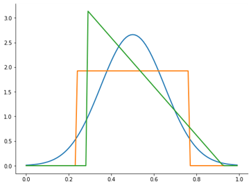
TipEl operador esperanza y los momentos de una variable aleatoria
Algunos de los descriptores más utilizados pueden generalizarse a través del operador esperanza y los denominados momentos de una variable aleatoria. EL operador esperanza se define como,
\[ E[X] = \sum_{all\ x_i} x_i p_X(x_i) \quad \text{para variables discretas} \]
El valor medio se define entonces como \(\mu_X = E[X]\). De igual manera, la varianza se puede definir como \(Var[X] = E[(X-\mu_X)^2]\).
Otros descriptores pueden definirse usando el operador esperanza, como los momentos de orden \(n\) de una variable aleatoria: \(E[X^n] = \sum_{all\ x_i} x_i^n p_X(x_i)\). Estos describen otros aspectos de la distribución de probabilidad de una variable aleatoria, como la asimetría y la curtosis.
2.2.3.3 Intervalos de confianza (Credible Intervals)
Los intervalos, o regiones (si es un conjunto disjunto), de confianza son rangos de valores que contienen un cierto porcentaje de la probabilidad total de una variable aleatoria. Por ejemplo, el intervalo de probabilidad del 95% de una variable aleatoria es el rango de valores que contiene el 95% de la probabilidad total de la variable aleatoria.
No hay una sola manera de definir un rango de valores que contenga una probabilidad \(p\) de una variable aleatoria. Algunas definiciones comunes para el intervalo son:
- Intervalo centrado en la media: Es el rango continuo de valores que contiene una probabilidad \(p\) y que tiene como punto central la media de la variable aleatoria. Es el rango \((a,b)\) tal que
\[F_X(a) = 0.5 - p/2, F_X(b) = 0.5 + p/2\]
- Intervalo simétrico: Es el rango continuo de valores \((a,b)\) tal que
\[F_X(a) = 1 - F_X(b) = p/2\]
- Intervalo de máxima densidad: Es elintevalo más chico que cubre la probabilidad deseada. Es el intervalo de todos los valores de \(X\) que colectivamente suman una probabilidad \(p\) y, a su vez, tienen mayor probabilidad que cualquier valor fuera del rango. Es el rango de valores tal que
\[\int_{a}^{b} f_X(x)dx = p\ \text{y} \ f(a)=f(b)\]
AdvertenciaIntervalos de confianza y distribuciones
En distribuciones bi-modales, el intervalo de máxima densidad puede ser una región disjunta.
Intervalo simétrico
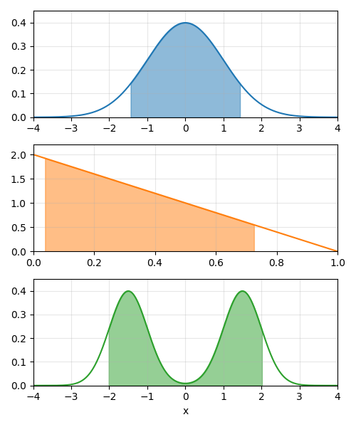
Intervalo de densidad máxima
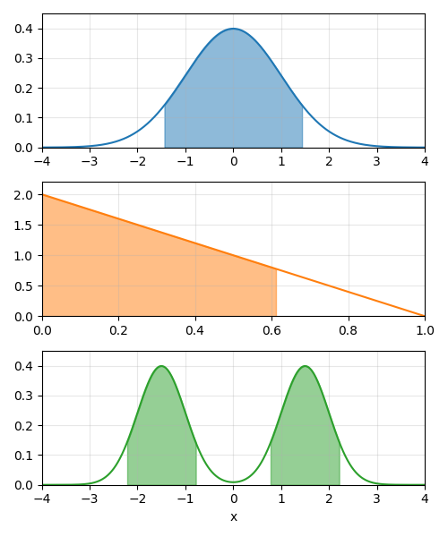
Ejercicio 2.2 Ejercicio de ejemplo
NotaSolución
Here’s one solution.
def factorial(n):
k = 1
for i in range(n):
k = k * (i + 1)
return k
factorial(4)2.3 Probabilidad conjunta
Sean las variables aleatorias \(X, Y\), se puede definir la probabilidad conjunta de ambas variables como, la probabilidad de que la variable \(X\) tome el valor \(x\) (o un entorno de, si fuera continua) y la variable \(Y\) tome el valor \(y\) (o un entorno de, si fuera continua). Esta probabilidad está definida por la función de probabilidad conjunta:
\[f_{XY}(x_i, y_i) = P(X = x_i, Y = y_i)\]
\[f_{XY}(x_i, y_i) dx dy = P(x \leq X \leq x+dx, y \leq Y \leq y+dy)\]
O en forma de distribución acumulada:
\[f_{XY}(x_i, y_i) = P(x \leq X \leq x+dx, y \leq Y \leq y+dy)\]
\[F_{XY}(x_i, y_i) = \int_{-\infty}^{x}\int_{-\infty}^{y} f_{XY}(u, v) du dv\]
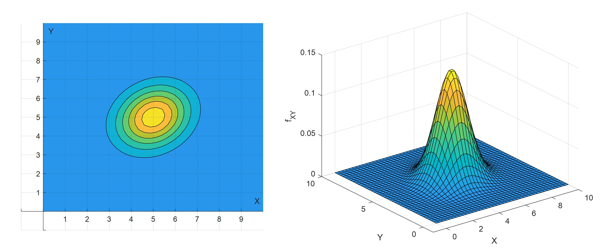
2.4 Probabilidad condicional e independencia estadística
Se define probabilidad condicional a la probabilidad de que ocurra un evento \(A\) dado que ha ocurrido otro evento \(B\). Se denota como \(P(A|B)\) y se define como:
\[P(A|B) = \frac{P(A \cap B)}{P(B)}\]
Esta ecuación refleja el resultado de condicionar la probabilidad de que suceda un evento a la ocurrencia cierta de otro, modificandose el espacio muestral de referencia para determinar probabilidades. El espacio muestral (que abarca todos los posibles eventos) es ahora el evento cierto.
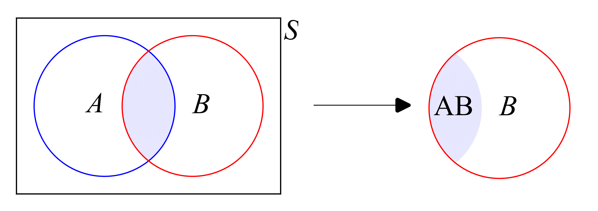
En el caso de variables aleatorias, se pueden definir las funciones de probabilidad condicional,
\[f_{X|Y}(x,y) = P(X = x | Y = y) = \frac{f_{XY}(x, y)}{f_Y(y)}\]
Y de igual manera,
\[f_{Y|X}(y,x) = \frac{f_{XY}(x, y)}{f_X(x)}\]
2.4.1 Independencia estadística
A partir de la definición de probabilidad condicional de un evento respecto de otro, se puede deducir de manera inmediata lo que se conoce como “independencia estadística” entre dos eventos. Esto es, dos eventos son estadísticamente independientes si la ocurrencia cierta de uno no afecta la probabilidad de ocurrencia del otro. Esta condición puede escribirse matemáticamente como,
\[ f_{X|y}(x,y) = f_X(x)\\ f_{Y|x}(y,x) = f_Y(y) \]
Corolario:
ImportanteIndependencia estadística y probabilidad conjunta
Si dos variables aleatorias son independientes, entonces su función de probabilidad conjunta es el producto de sus funciones de probabilidad marginales.
\[ f_{XY}(x,y) = f_X(x) f_Y(y)\\ F_{XY}(x,y) = F_X(x) F_Y(y) \]
Ejercicio 2.3 Ejercicio de ejemplo
NotaSolución
Here’s one solution.
def factorial(n):
k = 1
for i in range(n):
k = k * (i + 1)
return k
factorial(4)2.4.2 Covarianza y Correlación
Una manera resumida de describir el grado relación lineal entre dos variables aleatorias es a través de la covarianza y el coeficiente de correlación.
Se define la Covarianza entre dos variables aleatorias a través de la siguiente función,
\[COV(X,Y) = E[(X-\mu_X)(Y-\mu_Y)]\]
\[COV(X,Y) = \int\int (x-\mu_X)(y-\mu_Y)f_{XY}(x,y) dxdy\]
Se define el Coeficiente de Correlación entre las dos variables como,
\[ \rho = \frac{COV(X,Y)}{\sigma_X \sigma_Y} \]
AdvertenciaIndependencia estadística y correlación
De la definición de covarianza se deduce que para dos variables estadísticamente independientes,
\[E[XY] = E[X]E[Y] \Rightarrow COV(X,Y) = 0 \Rightarrow \rho = 0\]
La sentencia opuesta no necesariamente es cierta. Es decir, Si dos variables son NO correlacionadas (\(\rho = 0\)) no implica que haya independencia estadística.
Ejercicio 2.4 Ejercicio de ejemplo
NotaSolución
Here’s one solution.
def factorial(n):
k = 1
for i in range(n):
k = k * (i + 1)
return k
factorial(4)2.5 Teorema de la probabilidad total
En muchos problemas es más sencillo calcular la probabilidad de un evento a partir de la probabilidad de otros eventos relacionados. De esta manera, puede desagregarse dicha probabilidad de ocurrencia en la ocurrencia de determinados eventos que abarquen todo el espacio muestral \(S\).
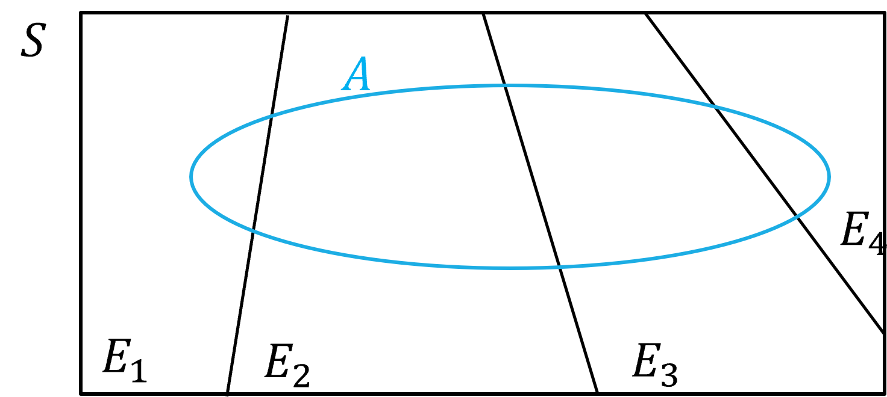
El Teorema de la probabilidad total establece que, dados \(n\) eventos \(E_i\) mutuamente exclusivos y colectivamente exhaustivos, la probabilidad del evento \(A\) puede calcularse según,
\[ P(A) = P(A / E_1) P(E_1) + P(A / E_2) P(E_2) + \ldots + P(A / E_n) P(E_n) \]
ImportanteDeducción del Teorema de la probabilidad total
\[ A = A S = A (E_1 \cup E_2 \cup \ldots \cup E_n) = A E_1 \cup A E_2 \cup \ldots \cup A E_n \]
Como los eventos \(E_i\) son mutuamente excluyentes,
\[ P(A) = P(A E_1) + P(A E_2) + \ldots + P(A E_n) \]
Y a partir de la definición de probabilidad condicional, se puede escribir según,
\[ P(A) = P(A / E_1) P(E_1) + P(A / E_2) P(E_2) + \ldots + P(A / E_n) P(E_n) \]
Ejercicio 2.5 Se pide calcular la probabilidad de colapso de un edificio durante el próximo terremoto posible. No se sabe a ciencia cierta la intensidad del próximo terremoto, pero en base al juicio de expertos sismólogos, se definen las siguientes probabilidades:
\[P (fuerte) = 0.01, P(medio)=0.1, P(debil)=0.89\]
Del análisis estructural del edificio se estiman las siguientes probabilidades:
\[P(C|fuerte)=0.9, P(C|medio)=0.2, P(C|debil)=0.01\]
Determinar la probabilidad de colapso
NotaSolución
Podemos calcular la probabilidad de colapso a partir del Teorema de la Probabilidad Total,
\[ P(C) = P(C|fuerte)P(fuerte) + P(C|medio)P(medio) + P(C|debil)P(debil)\\ P(C) = 0.9 \times 0.01 + 0.2 \times 0.1 + 0.01 \times 0.89 = 0.038 \]
# Probabilidad de magnitud de sismo
p_fuerte = 0.01
p_medio = 0.1
p_debil = 0.89
# Probabilidades de colapso condicionadas a la magnitud del sismo
p_c_fuerte = 0.9
p_c_medio = 0.2
p_c_debil = 0.01
# Probabilidad de colapso
p_C = p_c_fuerte * p_fuerte + p_c_medio * p_medio + p_c_debil * p_debil2.5.1 Distribuciones marginales
A partir del Teorema de la Probabilidad Total, se pueden calcular las distribuciones marginales de las variables aleatorias a partir de la distribución de probabilidad condicional (o conjunta).
Variables Discretas
\[ f_X(x_i) = \sum_{j} f_{X|Y}(x_i, y_j) f_{Y}(y_i) = \sum_{j} f_{XY}(x_i, y_j)\\[2ex] f_Y(y_i) = \sum_{j} f_{Y|X}(y_i, x_j) f_X (x_j) = \sum_{j} f_{XY}(x_j, y_i) \]
Variables continuas
\[ f_X(x) = \int_{-\infty}^{\infty} f_{X|Y}(x, y) f_Y (y) dy = \int_{-\infty}^{\infty} f_{XY}(x, y) dy\\[2ex] f_Y(y) = \int_{-\infty}^{\infty} f_{Y|X}(y, x) f_X(x) dx = \int_{-\infty}^{\infty} f_{XY}(x, y) dx \]
2.6 Teorema de Bayes
A partir del Teorema de la Probabilidad Total, se puede deducir el Teorema de Bayes. Este teorema es de gran utilidad en la inferencia estadística y en la toma de decisiones, ya que permite calcular la probabilidad de un evento condicionado a la ocurrencia de otro, a partir de la probabilidad de ocurrencia de este último condicionado al primero.
\[ P(X=x_i|Y) = \frac{P(Y|X=x_i)P(X=x_i)}{\sum_{i} P(Y|X=x_i)P(X=x_i)} \]
O en el caso de variables aleatorias continuas,
\[ f_{X|Y}(x,y) = \frac{f_{Y|X}(y,x)f_X(x)}{\int f_{Y|X}(y,x)f_X(x) \, dx} \]
Ejercicio 2.6 Para el ejercicio Ejercicio 2.5, se pide calcular la probabilidad de que el sismo sea de magnitud débil, media o fuerte, dado que el edificio colapsó. Comparar con las probabilidades de la magnitud del sismo previas a obsevar que colapsó.
NotaSolución
Las probabilidades condicionales de la magnitud del sismo dado que el edificio colapsó se pueden calcular a partir del Teorema de Bayes,
\[ P( fuerte|C) = \frac{P(C|fuerte)P(fuerte)}{P(C)} = \frac{0.9 \times 0.01}{0.038} = 0.24\\ P( medio|C) = \frac{P(C|medio)P(medio)}{P(C)} = \frac{0.2 \times 0.1}{0.038} = 0.53\\ P( debil|C) = \frac{P(C|debil)P(debil)}{P(C)} = \frac{0.01 \times 0.89}{0.038} = 0.23 \]
Puede verse que, una vez observado que la estructura colapsó, la probabilidad de que el sismo haya sido de magnitud media es la más alta.
p_fuerte_dado_C = p_c_fuerte * p_fuerte / p_C
p_medio_dado_C = p_c_medio * p_medio / p_C
p_debil_dado_C = p_c_debil * p_debil / p_CEjercicio 2.7 Se tiene un grupo de pilotes diseñado para soportar una carga última de 200 t. Por un caso extraordinario, debe pasar por encima de ellos una carga de 300 t. De ensayos de carga realizados se sabe que la probabilidad de que el grupo de pilotes resista las 300 t (evento \(A\)) es del 70%.
Se propone realizar una prueba de carga sobre los pilotes, sometiéndolos a una carga de 280 t. Si el grupo de pilotes es capaz de soportar 300 t, entonces el resultado de la prueba será exitoso (evento \(T\)) con seguridad. Si el grupo de pilotes no es capaz de soportar las 300 t, entonces la probabilidad de que el ensayo sea exitoso es del 50%.
Determinar si se justifica realizar el ensayo sobre los pilotes.
NotaSolución
De los datos del problema tenemos que:
\[ P(A) = 0.70 \]
\[ P(\bar{T} \mid \bar{A}) = 0.50 \]
\[ P(T \mid A) = 1 \]
Para determinar si se justifica la realización del ensayo o no, tenemos que determinar cuál es la probabilidad de que el grupo de pilotes soporte las 300 t, si es que el ensayo es exitoso. Entonces,
\[ P(A \mid T) = \frac{P(T \mid A) P(A)}{P(T)} \]
Donde:
\[ P(T) = P(T \mid A) P(A) + P(T \mid \bar{A}) P(\bar{A}) \]
Reemplazando valores:
\[ P(A \mid T) = \frac{1 \times 0.70}{1 \times 0.70 + (1 - 0.50) \times 0.30} = 0.824 \]
Como se ve del resultado, si el ensayo resulta exitoso, la probabilidad de que el grupo de pilotes soporte la carga extraordinaria aumenta. El ensayo está justificado.
# Datos
pA = 0.70
p_nT_nA = 0.50
p_T_A = 1
# Probabilidad de resultado de prueba exitoso
p_T = p_T_A * pA + p_nT_nA * (1 - pA)
# Probabilidad de que los pilotes resistan dado que el ensayo fue exitoso
p_A_T = p_T_A * pA / (p_T_A * pA + p_nT_nA * (1 - pA))2.7 Simulación de variables aleatorias
Una manera alternativa de calcular probabilidades, momentos y descriptores asociados a una variable, o más, variable aleatoria es a través de simulaciones. En este caso, se generan muestras de la variable aleatoria a partir de la función de densidad de probabilidad asociada, y se calculan los valores de interés a partir de estas muestras.
Supongamos que tenemos un mecanismo para generar muestras de una variable aleatoria \(X\) con función de densidad de probabilidad \(f_X(x)\). Podemos calcular de manera aproximada,
| Aproximación | Python | |
|---|---|---|
| Valor medio | \(\frac{1}{N} \sum_{i=1}^{N} x_i\) | np.mean(x) |
| Varianza | \(\frac{1}{N} \sum_{i=1}^{N} (x_i - \mu_X)^2\) | np.var(x) |
| Desvío estándar | \(\sqrt{ \frac{1}{N} \sum_{i=1}^{N} (x_i - \mu_X)^2 }\) | np.std(x) |
| Probabilidad | \(\frac{1}{N} \sum_{i=1}^{N} I(a \leq x_i \leq b)\) | np.mean(x<b && x>a) |
| Densidad3 | \(\frac{1}{N} \sum_{i=1}^{N} \delta(x - x_i)\) | stats.kde(x) or sns.kdeplot(x) |
*siendo \(x\) un vector de \(N\) simulaciones de la variable aleatoria \(X\)
2.7.1 Simulación de funciones de variables
Una de los aspectos más útiles de calcular probabilidades mediante simulación es la simpleza para realizar cálculo que analíticamente son muy complejos. Por ejemplo, calcular probabilidades de funciones de variables aleatorias.
Supongamos que quiero calcular el valor medio y desvío estándar de que \(Y=3 X^3 - 1\) sea mayor a 2, donde \(X\) sigue una distribución normal con media 0 y desvío estándar 1. Analíticamente habría que estimar la densidad de probabilidad de \(Y\) y luego integrar para obtener los momentos. Sin embargo, mediante simulación se puede calcular de manera sencilla, aplicando la transformación a los valores simulado de \(X\).
2.7.2 Probabilidad marginal
Si tenemos un conjunto de simulaciones de varias variables correlacionadas, podemos calcular la probabilidad marginal de una de ellas, ignorando el efecto de las demás. Por ejemplo, si tenemos dos variables \(X\) e \(Y\) correlacionadas, podemos calcular la probabilidad de que \(X\) sea mayor a 2, sin considerar el valor de \(Y\) como,
2.7.3 Probabilidad condicional
Si tenemos un conjunto de simulaciones de varias variables correlacionadas, podemos calcular la probabilidad condicional de una de ellas, reduciendo el vector de simulaciones a solo las que cumplen la condición, y luego calculando la probabilidad del evento de manera normal. Por ejemplo, si tenemos dos variables \(X\) e \(Y\) correlacionadas, podemos calcular la probabilidad de que \(X\) sea mayor a 2, dado que \(Y\) es menor a 1 como,
2.7.4 El error en las aproximaciones por simulación
Es importante tener en cuenta que las aproximaciones por simulación tienen un error asociado, que depende del número de simulaciones realizadas. A medida que se aumenta el número de simulaciones, el error disminuye, y se obtiene una estimación más precisa de los valores de interés.
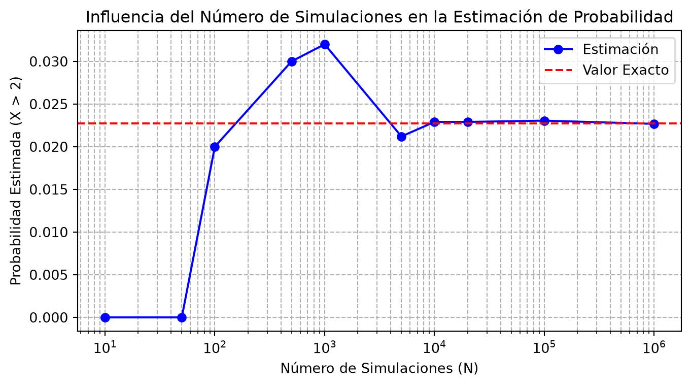
Si bien el ejemplo anterior ejemplifica el concepto de la influencia del número de simulaciones sobre la precisión de la estimación, la velocidad de convergencia depende del valor a estimar y de la distribución de la variable aleatoria.
2.8 Compendio de distribuciones de probabilidad
2.8.1 Distribuciones discretas
2.8.1.1 Distribución Bernoulli
La distribución Bernoulli es una distribución discreta de probabilidad que modela experimentos con dos posibles resultados: éxito (1) o fracaso (0). Es la base de la distribución binomial y se utiliza frecuentemente para representar eventos dicotómicos, como el lanzamiento de una moneda o la activación de un componente. Su función de masa de probabilidad está dada por:
\[ P(X = x \mid p) = p^x (1-p)^{1-x}, \quad x \in \{0, 1\} \]
Dominio de la función: \(x \in \{0, 1\}\)
Parámetros de la distribución:
- \(p \in [0, 1]\): Probabilidad de éxito (ocurrencia de 1).
Momentos de la distribución:
- \(\mu_X = p\)
- \(\sigma_X = \sqrt{p ( 1 - p )}\)
TipSobre la importancia de la distribución Bernoulli
La distribución Bernoulli es fundamental en probabilidad y estadística, ya que permite modelar experimentos con un solo ensayo binario. Es el bloque básico de la distribución binomial, que generaliza la ocurrencia de \(n\) ensayos independientes con probabilidad \(p\) de éxito.
Su simplicidad la convierte en una herramienta esencial para modelar decisiones binarias, pruebas de hipótesis, procesos estocásticos y simulaciones de eventos aleatorios. Además, en el contexto bayesiano, se asocia naturalmente con la distribución Beta, que actúa como una distribución a priori conjugada para la distribución Bernoulli.
En aplicaciones prácticas, la distribución Bernoulli es útil para modelar procesos de fallo/éxito, respuestas sí/no en encuestas, y cualquier situación donde se observe un único evento con dos posibles resultados.
2.8.1.2 Distribución Binomial
La distribución binomial es una distribución discreta de probabilidad que modela el número de éxitos en una secuencia de \(n\) ensayos independientes de Bernoulli, cada uno con una probabilidad de éxito \(p\). Es particularmente útil para modelar situaciones donde cada ensayo tiene exactamente dos posibles resultados: “éxito” o “fracaso”. La función de masa de probabilidad de una variable aleatoria binomial está dada por:
\[ P(X = k) = \binom{n}{k} p^k (1-p)^{n-k}, \quad k \in \{0, 1, 2, \ldots, n\} \]
donde \(\binom{n}{k} = \frac{n!}{k!(n-k)!}\) es el coeficiente binomial que representa el número de formas de seleccionar \(k\) elementos de un conjunto de \(n\) elementos.
Dominio de la función: \(X \in \{0, 1, 2, \ldots, n\}\)
Parámetros de la distribución:
- \(n\): Número de ensayos (entero positivo).
- \(p\): Probabilidad de éxito en cada ensayo (\(0 \leq p \leq 1\)).
Momentos de la distribución:
- \(\mu_X = n \cdot p\)
- \(\sigma_X^2 = n \cdot p \cdot (1-p)\)
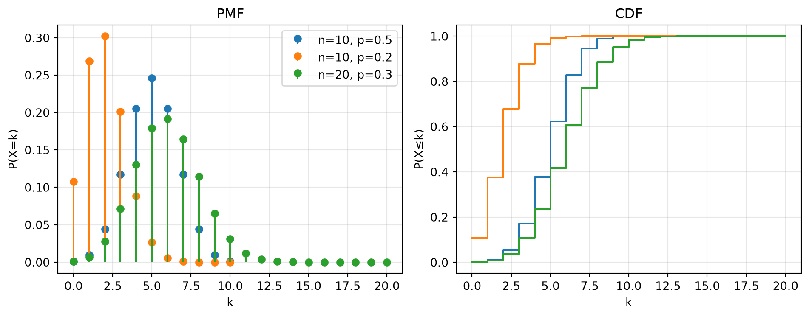
TipSobre la importancia de la distribución Binomial
La distribución binomial es fundamental en estadística y probabilidad por su capacidad para modelar situaciones donde se cuenta el número de ocurrencias de un evento específico en un número fijo de ensayos independientes.
Una propiedad importante de la distribución binomial es que puede aproximarse mediante una distribución normal cuando \(n\) es grande y \(p\) no está extremadamente cerca de 0 o 1. Esta aproximación es especialmente buena cuando \(n \cdot p > 5\) y \(n \cdot (1-p) > 5\).
Además, la distribución binomial es un caso especial de la distribución de Poisson cuando el número de ensayos \(n\) tiende a infinito y la probabilidad de éxito \(p\) tiende a cero, de manera que \(n \cdot p\) permanezca constante.
2.8.1.3 Distribución Poisson
La distribución Poisson es una distribución discreta de probabilidad que modela el número de eventos que ocurren en un intervalo fijo de tiempo o espacio, bajo la suposición de que los eventos ocurren con una tasa constante y de manera independiente. Su función de masa de probabilidad está dada por:
\[ P(X = k \mid \lambda) = \frac{\lambda^k e^{-\lambda}}{k!}, \quad k = 0, 1, 2, \dots \]
Dominio de la función: \(k \in \mathbb{N}_0 = \{0, 1, 2, \dots\}\)
Parámetros de la distribución:
- \(\lambda > 0\): Tasa promedio de ocurrencia de eventos (media y varianza de la distribución).
Momentos de la distribución:
- \(\mu_X = \lambda\)
- \(\sigma_X = \lambda\)
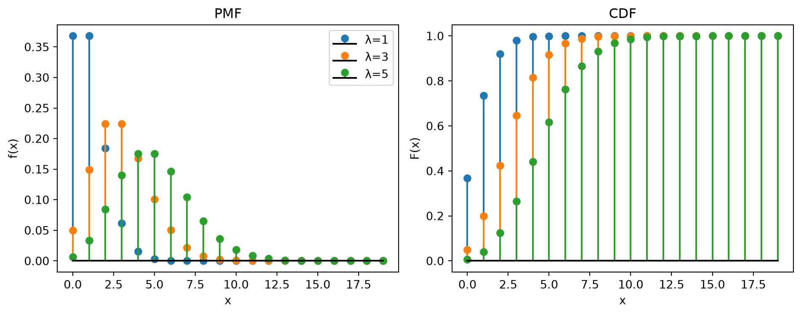
TipSobre la importancia de la distribución Poisson
La distribución Poisson es ampliamente utilizada en probabilidad y estadística para modelar eventos raros o de baja frecuencia en un intervalo continuo, como la cantidad de autos que pasan por un peaje, o la ocurrencia de fenómenos naturales extremos.
Es especialmente útil en procesos aleatorios de tipo Poisson, donde los eventos son independientes y la probabilidad de ocurrencia en un pequeño intervalo de tiempo o espacio es proporcional al tamaño del intervalo. Además, la distribución Poisson es un límite de la distribución binomial cuando el número de ensayos es muy grande y la probabilidad de éxito es muy pequeña.
Su aplicabilidad en la teoría de colas, análisis de riesgos, teoría de renovaciones y procesos de conteo en general, le otorgan un rol central en la modelización de fenómenos discretos en el tiempo o el espacio.
2.8.2 Distribuciones continuas
2.8.2.1 Distribución Normal
La distribución normal es una de las más importantes en la teoría de la probabilidad y estadística. Se caracteriza por ser simétrica respecto a su media, y por tener una forma de campana. La función de densidad de probabilidad de una variable aleatoria normal está dada por,
\[ f \left( x \mid \mu, \sigma \right) = \frac{1}{\sqrt{2\pi\sigma^2}} e^{-\frac{(x - \mu)^2}{2\sigma^2}} \]
Dominio de la función: \(x \in \mathbb{R}\)
Parámetros de la distribución:
- \(\mu\): Media
- \(\sigma\): Desvío estándar
Momentos de la distribución:
- \(\mu_X = \mu\)
- \(\sigma_X = \sigma\)
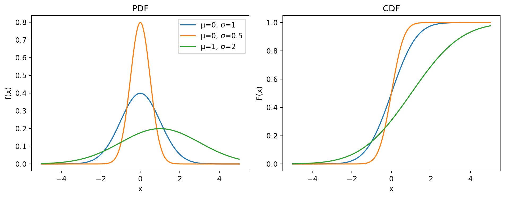
TipSobre la importancia de la distribución Normal
La distribución Normal ocupa un lugar central en la teoría de probabilidad y estadística debido a sus fundamentales propiedades matemáticas y aplicaciones prácticas. Su relevancia se sustenta en dos pilares teóricos principales:
Primero, el Teorema Central del Límite (TCL) establece formalmente que, bajo condiciones generales, la suma normalizada de variables aleatorias independientes e idénticamente distribuidas (iid) converge en distribución a una variable aleatoria Normal estándar cuando el número de sumandos tiende a infinito, independientemente de la distribución original de dichas variables, siempre que posean varianza finita4. Este teorema proporciona la base teórica para modelar múltiples fenómenos naturales y socioeconómicos donde los datos observados pueden interpretarse como la suma de numerosos efectos aleatorios pequeños e independientes.
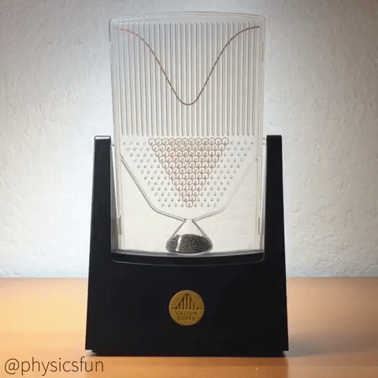
Segundo, desde la perspectiva de la teoría de la información, la distribución Normal maximiza la entropía entre todas las distribuciones continuas con varianza especificada5. Esta propiedad de máxima entropía establece a la distribución Normal como la elección menos sesgada cuando solo se conocen la media y varianza de un fenómeno aleatorio (es decir, si solo conozco la media y la varianza de una variable aleatoria, asumir que es Normal es la hipótesis más coherente con mi grado de ignorancia), lo que justifica su predominancia en problemas de inferencia estadística.
2.8.2.2 Distribución Lognormal
La distribución lognormal es una distribución continua de probabilidad cuya variable aleatoria se obtiene al aplicar la función exponencial a una variable aleatoria que sigue una distribución normal. Es decir, si \(Y \sim \mathcal{N}(\mu, \sigma^2)\), entonces \(X = e^Y\) sigue una distribución lognormal. La función de densidad de probabilidad de una variable aleatoria lognormal está dada por:
\[ f \left( x \mid \lambda, \xi \right) = \frac{1}{x \sqrt{2 \pi \xi^2}} e^{-\frac{(\ln x - \lambda)^2}{2 \xi^2}}, \quad x > 0 \]
Dominio de la función: \(x \in (0, \infty)\)
Parámetros de la distribución:
- \(\lambda\): Media de la variable normal subyacente (en el dominio logarítmico).
- \(\xi\): Desvío estándar de la variable normal subyacente.
Momentos de la distribución:
- \(\mu_X = \lambda \cdot e^{\frac{\xi^2}{2}}\)
- \(\sigma_X = \lambda \cdot e^{\frac{\xi^2}{2}} \cdot \sqrt{e^{\xi^2} - 1}\)
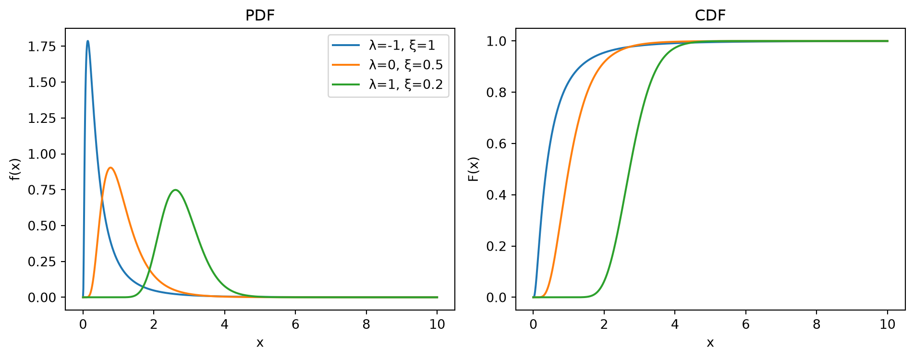
TipSobre la importancia de la distribución Lognormal
La distribución lognormal es especialmente relevante en contextos donde las variables aleatorias son producto de múltiples factores positivos independientes.
Una propiedad importante de la distribución lognormal es que, a diferencia de la normal, es asimétrica y solo admite valores positivos. Esto la convierte en una opción adecuada para modelar fenómenos donde la variable no puede ser negativa y donde la multiplicación de pequeños factores aleatorios independientes genera el comportamiento observado.
Además, la distribución lognormal surge naturalmente en procesos de crecimiento exponencial. Por ejemplo, si el crecimiento relativo de una variable es proporcional a su valor actual (como en los modelos de crecimiento poblacional o rendimientos financieros compuestos), el resultado es una distribución lognormal.
2.8.2.3 Distribución Exponencial
La distribución exponencial es una distribución continua de probabilidad que modela el tiempo entre eventos en un proceso de Poisson, donde los eventos ocurren de manera independiente y a una tasa constante. Su función de densidad de probabilidad está dada por:
\[ f(x \mid \lambda) = \lambda e^{-\lambda x}, \quad x \geq 0 \]
Dominio de la función: \(x \in [0, \infty)\)
Parámetros de la distribución:
- \(\lambda\): Tasa de eventos (inversa de la media), \(\lambda > 0\).
Momentos de la distribución:
- \(\mu_X = 1/\lambda\)
- \(\sigma_X = 1/\lambda\)
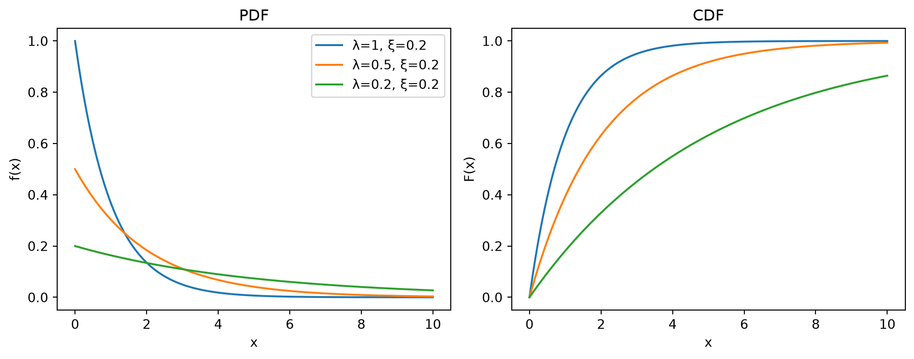
TipSobre la importancia de la distribución Exponencial
La distribución exponencial es fundamental en la teoría de la probabilidad y en aplicaciones prácticas, particularmente en el modelado de tiempos de espera y de vida útil de sistemas.
Es la única distribución continua con la propiedad de “falta de memoria”, lo que significa que la probabilidad de que un evento ocurra en un futuro determinado no depende de cuánto tiempo haya pasado. Esta característica es clave en la modelización de procesos sin memoria, como el tiempo hasta la falla de componentes electrónicos o la espera para la llegada de un cliente en una cola.
Además, la distribución exponencial es el caso particular de la distribución gamma cuando el parámetro de forma es igual a 1, y también está estrechamente relacionada con la distribución de Poisson, ya que el tiempo entre eventos en un proceso de Poisson sigue una distribución exponencial.
2.8.2.4 Distribución Beta
La distribución Beta es una distribución continua de probabilidad definida en el intervalo [0, 1]. Es muy utilizada para modelar proporciones, probabilidades y variables acotadas. Su función de densidad de probabilidad está dada por:
\[ f(x \mid \alpha, \beta) = \frac{x^{\alpha - 1}(1-x)^{\beta - 1}}{B(\alpha, \beta)}, \quad x \in [0, 1] \]
donde \(B(\alpha, \beta)\) es la función Beta, definida como:
\[ B(\alpha, \beta) = \int_0^1 t^{\alpha - 1}(1-t)^{\beta - 1} \, dt = \frac{\Gamma(\alpha)\Gamma(\beta)}{\Gamma(\alpha + \beta)} \]
Dominio de la función: \(x \in [0, 1]\)
Parámetros de la distribución:
- \(\alpha > 0\): Parámetro de forma (controla la inclinación hacia 0).
- \(\beta > 0\): Parámetro de forma (controla la inclinación hacia 1).
Momentos de la distribución:
- \(\mu_X = \frac{\alpha}{\alpha + \beta}\)
- \(\sigma_X = \sqrt{\frac{\alpha\beta}{(\alpha + \beta)^2(\alpha + \beta + 1)}}\)
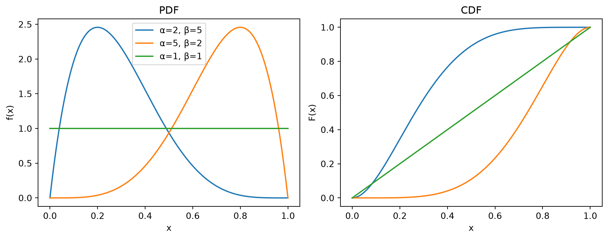
TipSobre la importancia de la distribución Beta
La distribución Beta es muy versátil debido a la flexibilidad de su forma, que depende de los parámetros \(\alpha\) y \(\beta\). Puede tomar una amplia variedad de formas, desde uniformes hasta fuertemente sesgadas o bimodales.
En el contexto bayesiano, la distribución Beta es una distribución a priori conjugada para la distribución binomial, lo que facilita la actualización de probabilidades a partir de datos observados. Esto la convierte en una herramienta muy útil en inferencia bayesiana para modelar probabilidades desconocidas.
Además, debido a que está definida en el intervalo [0, 1], es ideal para modelar proporciones, tasas de éxito, o cualquier fenómeno natural donde la variable esté inherentemente acotada entre 0 y 1.
2.8.2.5 Distribución Gumbel
La distribución Gumbel es una distribución continua de probabilidad utilizada para modelar el valor extremo de un conjunto de variables aleatorias. Es especialmente adecuada para representar el valor máximo o mínimo de fenómenos naturales, como precipitaciones extremas, caudales máximos, o temperaturas extremas. Su función de densidad de probabilidad está dada por:
\[ f(x \mid \mu, \beta) = \frac{1}{\beta} e^{-\frac{x-\mu}{\beta}} e^{-e^{-\frac{x-\mu}{\beta}}}, \quad x \in \mathbb{R} \]
Dominio de la función: \(x \in \mathbb{R}\)
Parámetros de la distribución:
- \(\mu\): Parámetro de localización (desplaza la distribución a lo largo del eje x).
- \(\beta > 0\): Parámetro de escala (controla la dispersión de la distribución).
Momentos de la distribución:
- \(\mu_X = u + \beta \gamma\)
- \(\sigma_X = \frac{\beta \pi}{\sqrt{6}}\)
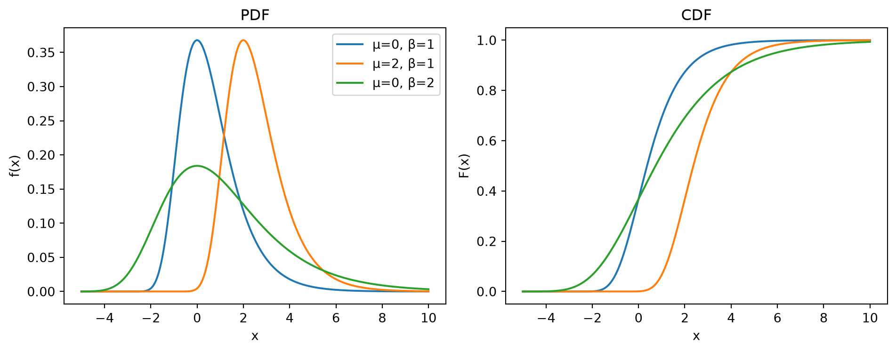
TipSobre la importancia de la distribución Gumbel
La distribución Gumbel es fundamental en el análisis de valores extremos (Extreme Value Theory, EVT), ya que describe la distribución de máximos (o mínimos) de muestras de variables aleatorias. Se utiliza en hidrología, meteorología y gestión de riesgos para modelar eventos extremos, como inundaciones, vientos fuertes y desastres naturales.
Es un caso particular de las distribuciones de valores extremos (EV Type I) y sirve como aproximación para el valor máximo de grandes muestras de datos cuando los valores subyacentes siguen una distribución con cola exponencial (como la normal o exponencial).
La flexibilidad y simplicidad de la distribución Gumbel permiten la estimación de valores de retorno, es decir, la magnitud de eventos extremos asociados a periodos de retorno específicos, una herramienta crucial en la planificación y diseño de infraestructuras críticas.
2.8.3 Plotea tus distribuciones
Para más detalles ver Stanford Encyclopedia of Philosophy.↩︎
Este concepto es conocido como “Dutch Book” y se refiere a una serie de apuestas que garantizan una pérdida para el apostador, independientemente del resultado del evento. Si un apostador acepta todas las apuestas de un Dutch Book, entonces está garantizado que perderá dinero.↩︎
La densidad de probabilidad se puede aproximar a través de un Kernel Density Estimation (KDE) o estimación de densidad por núcleos. Para más detalles sobre este método ver aquí.↩︎
Expresado matemáticamente, si \(X_1, X_2, ..., X_n\) son variables aleatorias i.i.d. con media \(\mu\) y varianza \(\sigma^2\), entonces: \(\frac{\sum_{i=1}^{n} X_i - n\mu}{\sigma\sqrt{n}} \xrightarrow{d} \mathcal{N}(0,1) \quad \text{cuando} \quad n \rightarrow \infty\)↩︎
Formalmente, la distribución Normal \(\mathcal{N}(\mu, \sigma^2)\) es la solución al problema de optimización que busca la distribución de máxima entropía sujeta únicamente a restricciones sobre los dos primeros momentos (media y varianza): \(\max_{f} H(X) \quad \text{sujeto a} \quad \mathbb{E}[(X-\mu)^2] = \sigma^2\)↩︎